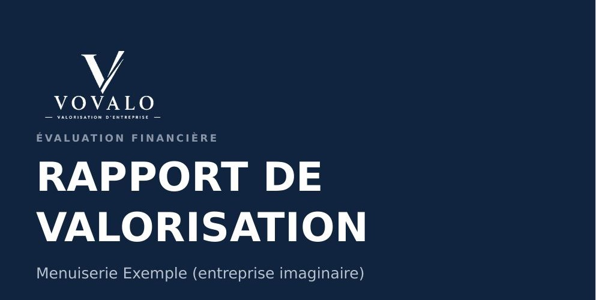
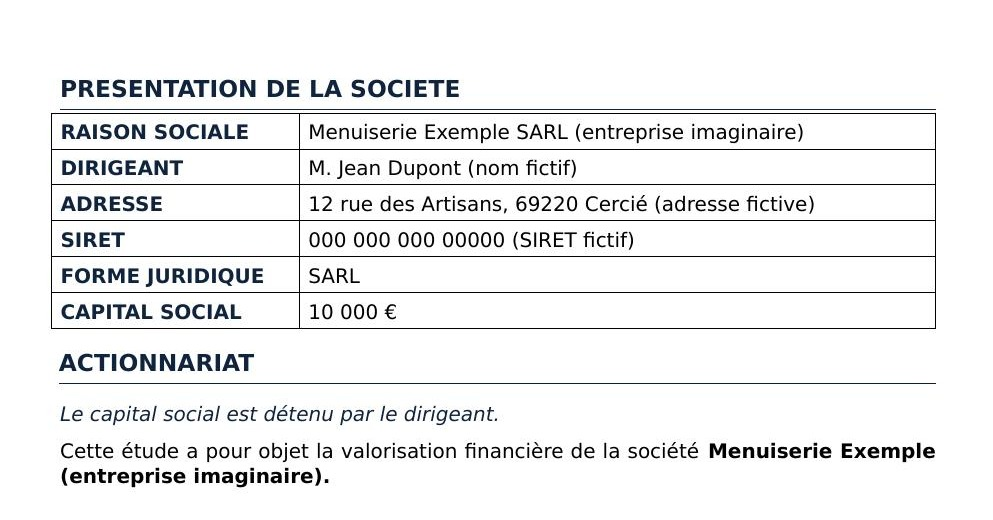
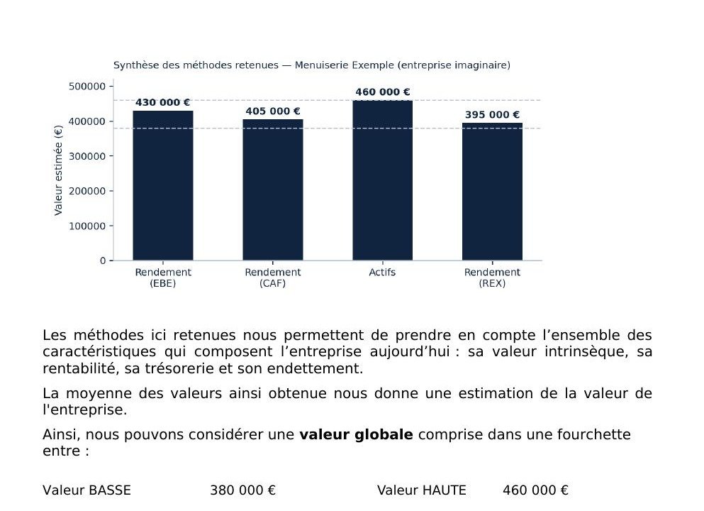
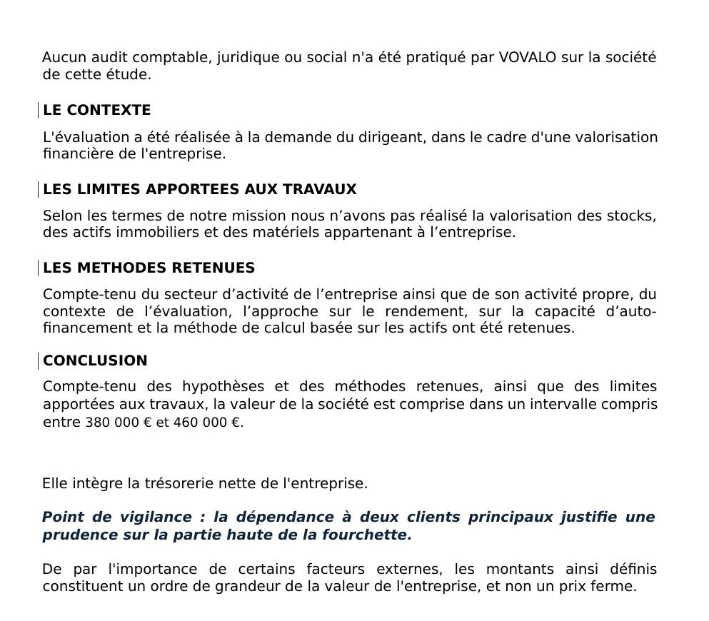

Connaître la vraie valeur de votre entreprise
VOVALO réalise des valorisations financières indépendantes pour les dirigeants de TPE et PME.
Prendre contactPourquoi faire estimer la valeur de votre entreprise ?
Vous vous demandez ce que vaut réellement votre entreprise ? Pour anticiper une transmission, préparer une décision, ou simplement y voir clair, nous réalisons un rapport de valorisation complet et argumenté.
Notre méthode
-
Premier échange*
Un rendez-vous pour comprendre votre entreprise, votre activité et vos objectifs, sans engagement.
-
Collecte des documents
Bilans, comptes de résultat, effectifs, actifs : nous vous indiquons précisément ce dont nous avons besoin. Un accord de confidentialité est signé avant tout échange.
-
Analyse et valorisation
Nous étudions votre entreprise sous plusieurs angles pour établir une estimation argumentée.
-
Restitution du rapport
Un document complet présentant la valeur de votre entreprise, ses points forts, ses fragilités et les leviers pour la renforcer. Estimation indicative, sans valeur d’expertise comptable ni valeur opposable.
* Le forfait de la valorisation vous est présenté après ce premier échange.
Un exemple de rapport
Aperçu de quelques pages : le rapport complet en compte une quinzaine, avec l’analyse détaillée du patrimoine, de la rentabilité et des méthodes de valorisation.




Nos secteurs
Nous accompagnons les dirigeants de TPE et PME de tous secteurs : bâtiment, industrie, commerce, artisanat et bien au-delà.
Retours de nos clients
Nous démarrons notre activité : les retours de nos clients seront bientôt disponibles ici.
Ce sur quoi vous pouvez compter
- Confidentialité
- Un accord de confidentialité est signé avant tout échange de documents. Vos données servent uniquement à la mission.
- Une estimation indicative
- Le rapport donne un ordre de grandeur argumenté. Il n’a pas de valeur d’expertise comptable ni de valeur opposable à un tiers.
- Un interlocuteur identifié pour chaque étape
-
Baptiste vous accompagne depuis le premier échange jusqu’à la collecte des documents. Matthieu établit le rapport et vous en présente les conclusions.
Notre équipe